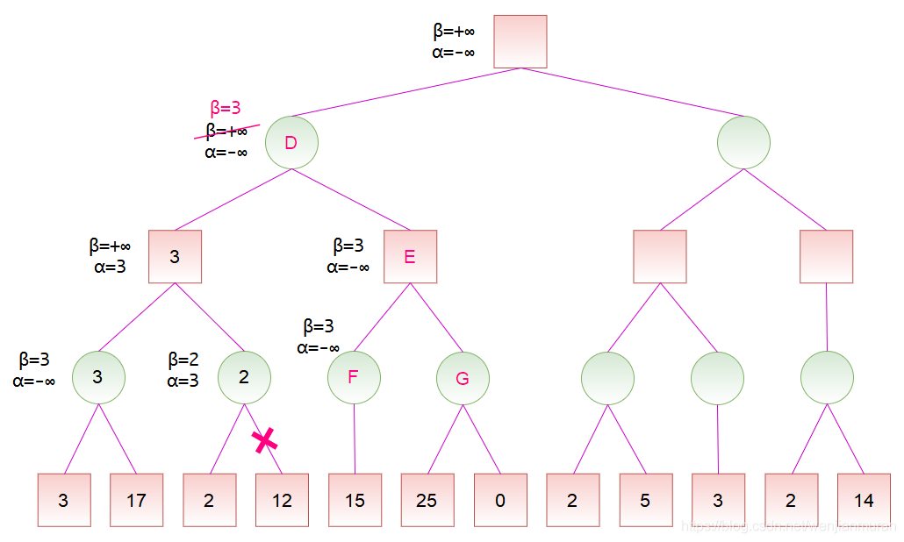
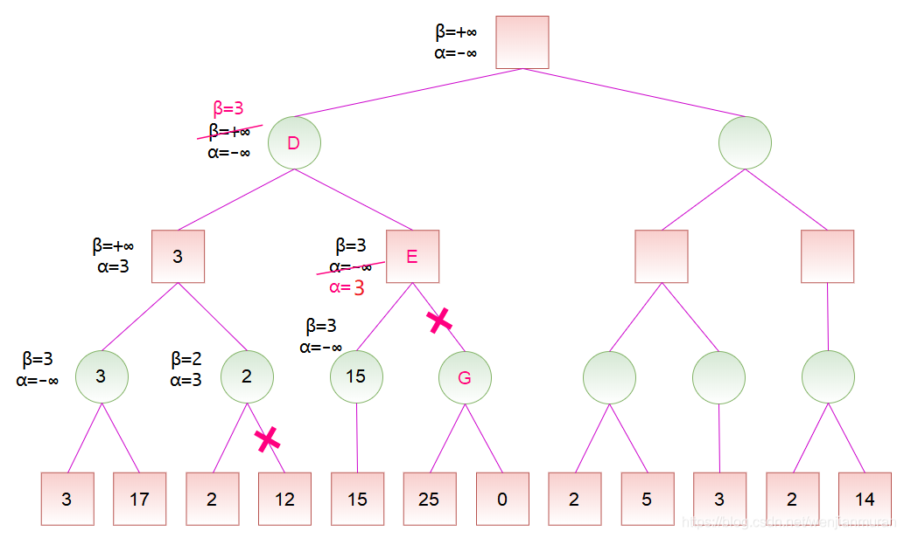
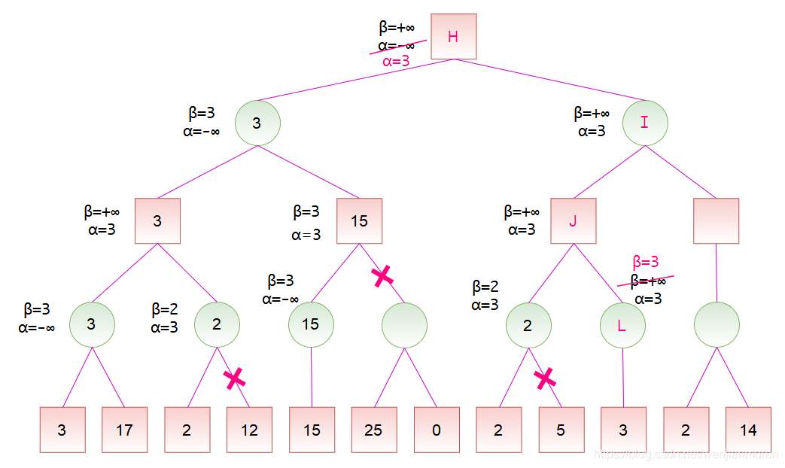

alpha-beta 剪枝
alpha-beta 剪枝
对于如下的局势，假设从左往右搜索：
若已知某节点的所有子节点的分数，则可以算出该节点的分数：对于 MAX 节点，取最大分数；对于 MIN 节点，取最小分数。
若已知某节点的部分子节点的分数，虽然不能算出该节点的分数，但可以算出该节点的分数的取值范围。同时，利用该节点的分数的取值范围，在搜素其子节点时，如果已经确定没有更好的走法，就不必再搜索剩余的子节点了。
记v为节点的分数，且 $\alpha \leq v \leq \beta$ 即 $\alpha$为最大下界，$\beta$ 为最小上界。当 $\alpha \geq \beta$ 时，该节点剩余的分支就不必继续搜索了（也就是可以进行剪枝了）。注意，当 $\alpha = \beta$ 时，也可以剪枝，这是因为不会有更好的结果了，但可能有更差的结果。

初始化时，令 $\alpha = -\infty$, $\beta = +\infty$，也就是$-\infty \leq v \leq +\infty$ 。到节点 A 时，由于左子节点的分数为 3，而节点 A 是 MIN 节点，试图找分数小的走法，于是将$\beta$值修改为 3，这是因为 3 小于当前的 $\beta$ 值（$\beta = +\infty$）。然后节点 A 的右子节点的分数为 17，此时不修改节点 A 的$\beta$ 值，这是因为 17 大于当前的 $\beta$ 值（$\beta = 3$）。之后，节点 A 的所有子节点搜索完毕，即可计算出节点 A 的分数为 3。
节点 A 是节点 B 的子节点，计算出节点 A 的分数后，可以更新节点 B 的分数范围。由于节点 B 是 MAX 节点，试图找分数大的走法，于是将 $\alpha$ 值修改为 3，这是因为 3 大于当前的 $\alpha$ 值（$\alpha = -\infty$）。之后搜索节点 B 的右子节点 C，并将节点 B 的 $\alpha$ 和 $\beta$ 值传递给节点 C。
对于节点 C，由于左子节点的分数为 2，而节点 C 是 MIN 节点，于是将 $\beta$ 值修改为 2。此时 ，故节点 C 的剩余子节点就不必搜索了，因为可以确定，通过节点 C 并没有更好的走法。然后，节点 C 是 MIN 节点，将节点 C 的分数设为 $\beta$ ，也就是 2。由于节点 B 的所有子节点搜索完毕，即可计算出节点 B 的分数为 3。

计算出节点 B 的分数后，节点 B 是节点 D 的一个子节点，故可以更新节点 D 的分数范围。由于节点 D 是 MIN 节点，于是将 $\beta$ 值修改为 3。然后节点 D 将 $\alpha$ 和 $\beta$ 值传递给节点 E，节点 E 又传递给节点 F。对于节点 F，它只有一个分数为 15 的子节点，由于 15 大于当前的 $\beta$ 值，而节点 F 为 MIN 节点，所以不更新其 $\beta$ 值，然后可以计算出节点 F 的分数为 15。

计算出节点 F 的分数后，节点 F 是节点 E 的一个子节点，故可以更新节点 E 的分数范围。节点 E 是 MAX 节点，更新 $\alpha$，此时 $\alpha \geq \beta$，故可以剪去节点 E 的余下分支。然后，节点 E 是 MAX 节点，将节点 E 的分数设为 $\alpha$，也就是 3。此时，节点 D 的所有子节点搜索完毕，即可计算出节点 D 的分数为 3。

计算出节点 D 的分数后，节点 D 是节点 H 的一个子节点，故可以更新节点 H 的分数范围。节点 H 是 MAX 节点，更新$\alpha$。然后，按搜索顺序，将节点 H 的 $\alpha$ 和 $\beta$ 值依次传递给节点 I、J、K。对于节点 K，其左子节点的分数为 2，而节点 K 是 MIN 节点，更新 $\beta$ ，此时 $\alpha \geq \beta$，故可以剪去节点 K 的余下分支。然后，将节点 K 的分数设为 2。

计算出节点 K 的分数后，节点 K 是节点 J 的一个子节点，故可以更新节点 J 的分数范围。节点 J 是 MAX 节点，更新 $\alpha$，但是，由于节点 K 的分数小于 $\alpha$ ，所以节点 J 的 $\alpha$ 值维持 3 保持不变。然后，将节点 J 的 $\alpha$ 和 $\beta$值传递给节点 L。由于节点 L 是 MIN 节点，更新 $\beta = 3$，此时 ，故可以剪去 $\alpha \geq \beta$ 节点 L 的余下分支，由于节点 L 没有余下分支，所以此处并没有实际剪枝。然后，将节点 L 的分数设为 3。